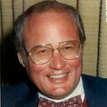

|
|||
| home : obituaries & memories : bio : quotes : photos : dadisms : art : contact | |||
 |
BIO Associate Justice Thomas F. Crosby, Jr. is a 1962 graduate of Stanford, earning his BA with "great distinction." He received his LLB in 1965 from the University of California at Berkeley and an LLM from the University of Virginia School of Law in 1988. Appointed to the Superior Court in 1981, Justice Crosby has served on the Court of Appeal since 1983. He also served on the Judicial Council of California and as a Special Master for the Commission on Judicial Performance. He has lectured at the Appellate Courts Institute and for programs sponsored by various professional organizations and universities. Justice Crosby has taught as an adjunct professor at the Chapman University School of Law and the University of Peru School of Law (Arequipa). He is the author of law review articles in the Hastings Law Journal, and the Chapman Law Review, as well as occasional pieces in the Orange County Lawyer. His broad experience includes practice with the NLRB, the District Attorneys Office (Orange County) and his own firm (variously: Crosby & Luesebrink and Crosby, Garey & Bonner). Justice Crosby was a Peace Corps Volunteer (1967-69) and temporary field director for the southern region of Peru. The justice is married to wife Patty and has two adult sons, Scott and Brett. His hobbies inlcude golf, fishing, history and current events. |
||